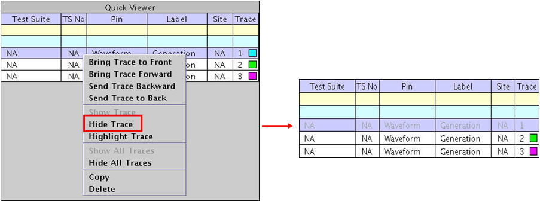
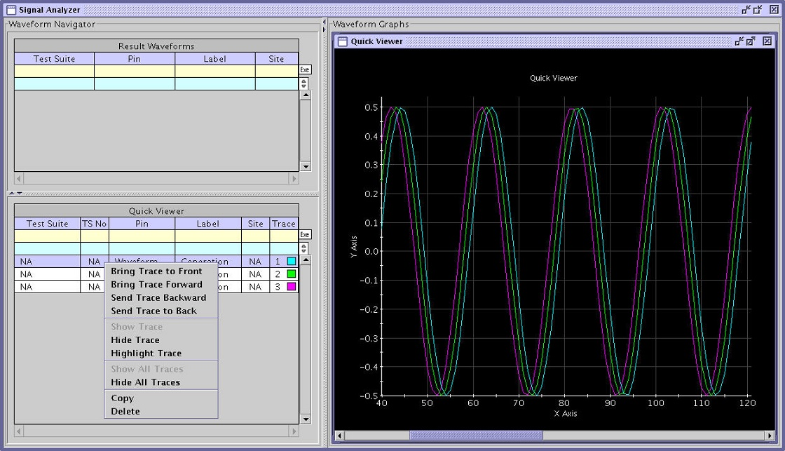
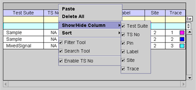

Selected Graph Shortcut Menus
If the users click a selected graph row of the Waveform Navigator Tool (WNT), the row is highlighted in blue. In this state, clicking the right mouse button accesses the shortcut menu shown below. The contents of the shortcut menu are changed based on the context. Their functionalities are the same as the corresponding menu items of the Menu Bar and Tool Bars.


Bring Trace to Front - the corresponding trace in the Quick Viewer will shift to the top if overlayed with other traces.
Bring Trace Forward - the corresponding trace in the selected Data Display Panel will shift one column up.
Send Trace Backward - the corresponding trace in the selected Data Display Panel will shift one column down.
Send Trace to Back - the corresponding trace in the selected Data Display Panel will shift to last column.
Show Trace - hidden trace is made visible in the selected Data Display Panel of the WGT.
Hide Trace - the corresponding trace displayed in the selected Data Display Panel will become non-visible temporarily, the selection in the selected graph table will become half transparent, and the small box in the Trace column will become non-visible.
Highlight Trace - all displayed traces in the selected graph except for the specified trace will become half transparent temporarily, and the small box in the Trace column will become non-visible. The same effect can be accomplished by double-clicking in a row of the Selected Graph table in the WNT.
Show All Traces - hidden traces are made visible.
Hide All Traces - all traces are made non-visible.
Copy - selected waveform is copied and can then be pasted into the result waveform table and/or a selected graph table.
Delete - selected waveform in the WNT table and corresponding waveform displayed in the selected Data Display Panel are deleted.
If a waveform is not selected in the WNT and you click the right mouse button, the following shortcut menu appears. The following screen shows the shortcut menu with the Paste function activated and the Show/Hide Column selection list displayed.

Paste - paste a waveform into the result waveforms table and/or a focused graph table that was copied from a focused graph table (you will be prompted if the waveform already exists in the table) (refer also to Copy/Paste Waveforms).
Delete All - deletes all the waveforms listed in the Selected Waveforms table.
Show/Hide Columns - collapse and expand any column of the table.
Sort - Sort Rows of table by test suite name, test suite number, pin name, label, site, or trace ID.
Filter Tool - view only those waveforms corresponding to the filter criteria by inputting a string in the filter row under the table heading of choice, then clicking the Exe button on the right side of the filter tool above the scroll bar.
Search Tool - search for a specified row by inputting a string in the search row under the table heading of choice, then clicking the Search Previous (upward triangle) or Search Next button (downward triangle) on the right side of the search tool above the scroll bar.
Enable TS No - enables/disables the test suite number from the table. The default is enabled.